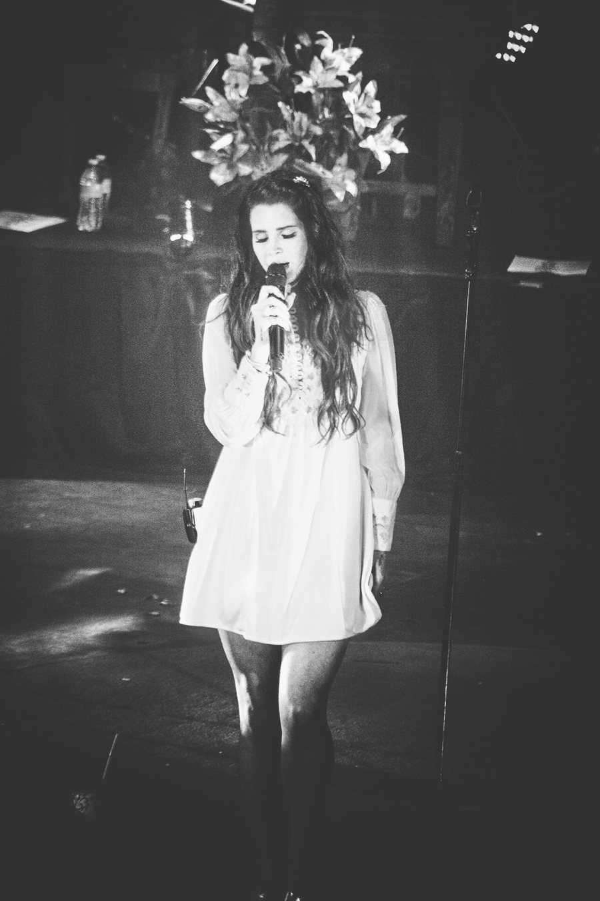

The Breakthrough

“Video Games”, 2011
In 2011, Del Rey uploaded self-made music videos for her songs "Video Games" and "Blue Jeans" to YouTube, featuring vintage footage interspersed with shots of her singing on her webcam. The "Video Games" music video became a viral internet sensation, which led to Del Rey being signed by Stranger Records to release the song as her debut single. She told The Observer: "I just put that song online a few months ago because it was my favorite. To be honest, it wasn't going to be the single but people have really responded to it." The song earned her a Q award for "Next Big Thing" in October 2011 and an Ivor Novello for "Best Contemporary Song" in 2012. In the same month, she signed a joint deal with Interscope Records and Polydor to release her second studio album Born to Die. She started dating Scottish singer Barrie-James O'Neill in the same year. The couple split in 2014 after three years together. Del Rey performed two songs from the album on Saturday Night Live on January 14, 2012, and received a negative response from various critics and the general public, who deemed the performance uneven and vocally shaky. She had earlier defended her spot on the program, saying: "I'm a good musician ... I have been singing for a long time, and I think that [SNL creator] Lorne Michaels knows that ... it's not a fluke decision."
Born to Die, 2012
Born to Die was released worldwide on January 31, 2012, to commercial success, charting at number one in 11 countries and debuting at number two on the US Billboard 200 album chart, although critics at the time were divided. The same week, she announced she had bought back the rights to her 2010 debut album and had plans to re-release it in the summer of 2012 under Interscope Records and Polydor. Contrary to Del Rey's press statement, her previous record label and producer David Kahne have both stated that she bought the rights to the album when she and the label parted company, due to the offer of a new deal, in April 2010. Born to Die sold 3.4 million copies in 2012, making it the fifth-best-selling album of 2012. In the United States, Born to Die charted on the Billboard 200 well into 2012, lingering at number 76, after 36 weeks on the chart. As of February 3, 2024, Born to Die had spent 520 weeks (10 years) on the Billboard 200, making Del Rey the second woman to reach this milestone, previously achieved only by Adele. Billboard credited the album as "one of the main catalysts for pop's mid-2010s shift from brash EDM to a moodier, hip-hop-inflected palette."
In September 2012, Del Rey unveiled the F-Type for Jaguar at the Paris Motor Show and later recorded the song "Burning Desire", which appeared in a promotional short film for the vehicle. Adrian Hallmark, Jaguar's global brand director, explained the company's choice, saying Del Rey had "a unique blend of authenticity and modernity". In late September 2012, a music video for Del Rey's cover of "Blue Velvet" was released as a promotional single for the H&M 2012 autumn campaign, which Del Rey also modeled for in print advertising. On September 25, Del Rey released the single "Ride" in promotion of her upcoming EP, Paradise. She subsequently premiered the music video for "Ride" at the Aero Theatre in Santa Monica, California, on October 10, 2012. Some critics panned the video for being allegedly pro-prostitution and antifeminist, due to Del Rey's portrayal of a prostitute in a biker gang.
Paradise and beyond, 2012–2013
Paradise was released on November 12, 2012, as a standalone release, as well as Born to Die: The Paradise Edition, which combined Del Rey's previous album with the additional eight tracks on Paradise. Paradise marked Del Rey's second top 10 album in the United States, debuting at number 10 on the Billboard 200 with 67,000 copies sold in its first week. It was also later nominated for Best Pop Vocal Album at the 56th Annual Grammy Awards. Del Rey received several nominations at the 2012 MTV Europe Music Awards in November and won the award for Best Alternative performer. At the Brit Awards in February 2013, she won the award for International Female Solo Artist, followed by two Echo Award wins, in the categories of Best International Newcomer and Best International Pop/Rock Artist.
Over the next several months, she released videos of two cover songs: one of Leonard Cohen's "Chelsea Hotel #2", followed by a duet with her then-boyfriend, Barrie-James O'Neill, of Lee Hazlewood and Nancy Sinatra's "Summer Wine". In May 2013, Del Rey released an original song, "Young and Beautiful" for the soundtrack of the 2013 film adaptation of The Great Gatsby. Following the song's release, it peaked at 22 on the Billboard Hot 100. However, shortly after its release to contemporary hit radio, the label prematurely pulled it and decided to send a different song to radio; on July 2, 2013, a Cedric Gervais remix of Del Rey's "Summertime Sadness" was sent to radio; a sleeper hit, the song proved to be a commercial success, surpassing "Young and Beautiful", reaching number 6 on the Billboard Hot 100 and becoming her first American top ten hit. The remix won the Grammy Award for Best Remixed Recording, Non-Classical in 2013, while "Young and Beautiful" was nominated for Best Song Written for Visual Media.